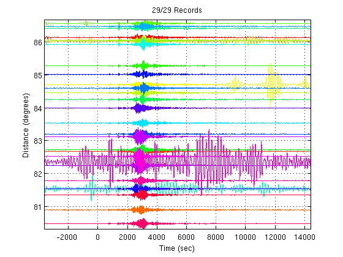
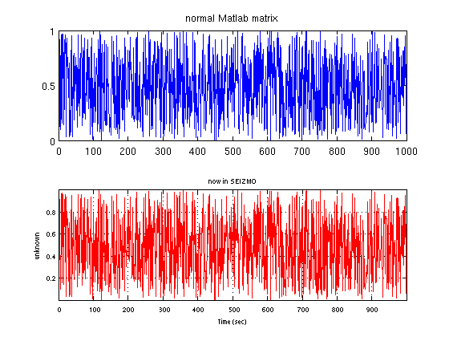
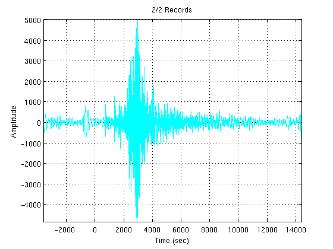
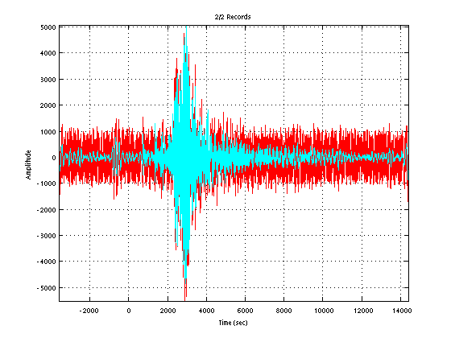
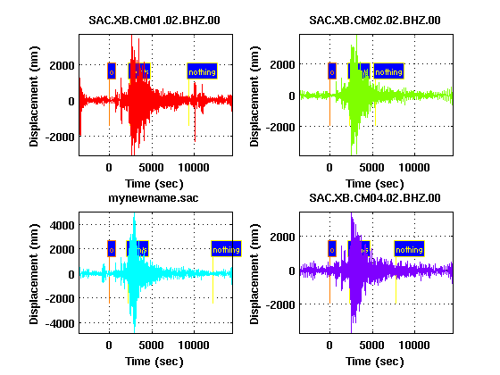

An Introduction to SEIZMO - A Matlab & Octave Toolbox for Earthquake Seismology
Contents
What is SEIZMO?
SEIZMO is a Matlab and GNU Octave based toolbox encompassing a collection of over 500 functions that provide a framework for seismic data preparation, quality control, and analysis akin to that of Seismic Analysis Code with a focus on passive source seismology at regional and global scales (where earthquakes and ambient noise are the sources).
Why use SEIZMO?
There are numerous functions for reading/writing standard seismic data formats, displaying and editing metadata, plotting seismograms, creating animations, data processing, and interactive analysis. Data processing capabilities include correlation, convolution, deconvolution, detrending, differentiation, integration, interpolation, resampling, filtering, merging, response transferring, rotation, stacking, spectral analysis, tapering, and windowing. The toolbox contains collections of functions for arrival time determination and quality control with cross correlation and cluster analysis, Rayleigh wave two plane-wave analysis, seismic ambient noise processing, and frequency-wavenumber analysis. SEIZMO utilizes direct access to the TauP toolkit to administer predicted arrival times, raypaths, pierce points, and travel time curves for several widely recognized 1D seismic earth models. Mapping in SEIZMO draws on the M_Map toolbox. The seismology toolbox also incorporates several 3D mantle models, a catalog of moment tensors from the Global CMT project, and a database of instrument responses available through IRIS. There are functions to aid in rapid prototyping and customization for new functions and documentation for every function is accessible through the inline help system.
How to read a file into SEIZMO
Currently SEIZMO only supports one type of seismic data format: SAC binary. Reading in the SAC files is done with readseizmo. For instance, to read in all the SAC files in a directory data/ (on a Unix OS) into the Matlab variable called dataset:
dataset=readseizmo('data/*');
Reading in Header Portion of Record(s) [######################### 100% #########################] 29/29 0s Reading in Data Portion of Record(s) [######################### 100% #########################] 29/29 0s
Or using the shortcut form (replacing readseizmo with just r):
dataset=r('data/*');
Reading in Header Portion of Record(s) [######################### 100% #########################] 29/29 0s Reading in Data Portion of Record(s) [######################### 100% #########################] 29/29 0s
The data can then be plotted using one of SEIZMO's plotting commands:
recordsection(dataset)
How to save a file from SEIZMO
There are 2 options when saving SEIZMO datasets: as a .mat file or as SAC files. The MAT file option allows you to save the entire dataset as well as any other variables you request into a single file. The downside is that this file is not readable by other seismology programs such as SAC or PQLII.
save myfile.mat dataset
To save the records in the dataset individually as SAC files use the command writeseizmo (here we will use its shortcut w). We also give a parameter & value pair to change the path of the output files to data-new.
w(dataset,'path','data-new');
Changing Paths of Record(s) Writing Record(s) [######################### 100% #########################] 29/29 0s
Listing the 2 directories shows all is well:
ls -n data/ data-new/
data/: total 580 -rw-r--r--. 1 500 10 18632 2011-01-05 03:01 SAC.XB.CM01.02.BHZ.00 -rw-r--r--. 1 500 10 18632 2011-01-05 03:01 SAC.XB.CM02.02.BHZ.00 -rw-r--r--. 1 500 10 18632 2011-01-05 03:01 SAC.XB.CM03.02.BHZ.00 -rw-r--r--. 1 500 10 18632 2011-01-05 03:01 SAC.XB.CM04.02.BHZ.00 -rw-r--r--. 1 500 10 18632 2011-01-05 03:01 SAC.XB.CM05.02.BHZ.00 -rw-r--r--. 1 500 10 18632 2011-01-05 03:01 SAC.XB.CM06.02.BHZ.00 -rw-r--r--. 1 500 10 18632 2011-01-05 03:01 SAC.XB.CM07.02.BHZ.00 -rw-r--r--. 1 500 10 18632 2011-01-05 03:01 SAC.XB.CM08.02.BHZ.00 -rw-r--r--. 1 500 10 18632 2011-01-05 03:01 SAC.XB.CM09.02.BHZ.00 -rw-r--r--. 1 500 10 18632 2011-01-05 03:01 SAC.XB.CM10.02.BHZ.00 -rw-r--r--. 1 500 10 18632 2011-01-05 03:01 SAC.XB.CM11.02.BHZ.00 -rw-r--r--. 1 500 10 18632 2011-01-05 03:01 SAC.XB.CM12.02.BHZ.00 -rw-r--r--. 1 500 10 18632 2011-01-05 03:01 SAC.XB.CM13.02.BHZ.00 -rw-r--r--. 1 500 10 18632 2011-01-05 03:01 SAC.XB.CM14.02.BHZ.00 -rw-r--r--. 1 500 10 18632 2011-01-05 03:01 SAC.XB.CM15.02.BHZ.00 -rw-r--r--. 1 500 10 18632 2011-01-05 03:01 SAC.XB.CM17.02.BHZ.00 -rw-r--r--. 1 500 10 18632 2011-01-05 03:01 SAC.XB.CM18.02.BHZ.00 -rw-r--r--. 1 500 10 18632 2011-01-05 03:01 SAC.XB.CM19.02.BHZ.00 -rw-r--r--. 1 500 10 18632 2011-01-05 03:01 SAC.XB.CM21.02.BHZ.00 -rw-r--r--. 1 500 10 18632 2011-01-05 03:01 SAC.XB.CM23.02.BHZ.00 -rw-r--r--. 1 500 10 18632 2011-01-05 03:01 SAC.XB.CM24.02.BHZ.00 -rw-r--r--. 1 500 10 18632 2011-01-05 03:01 SAC.XB.CM25.02.BHZ.00 -rw-r--r--. 1 500 10 18632 2011-01-05 03:01 SAC.XB.CM26.02.BHZ.00 -rw-r--r--. 1 500 10 18632 2011-01-05 03:01 SAC.XB.CM27.02.BHZ.00 -rw-r--r--. 1 500 10 18632 2011-01-05 03:01 SAC.XB.CM28.02.BHZ.00 -rw-r--r--. 1 500 10 18632 2011-01-05 03:01 SAC.XB.CM29.02.BHZ.00 -rw-r--r--. 1 500 10 18632 2011-01-05 03:01 SAC.XB.CM30.02.BHZ.00 -rw-r--r--. 1 500 10 18632 2011-01-05 03:01 SAC.XB.CM31.02.BHZ.00 -rw-r--r--. 1 500 10 18632 2011-01-05 03:01 SAC.XB.CM32.02.BHZ.00 data-new/: total 580 -rw-r--r--. 1 500 10 18632 2011-01-14 04:15 SAC.XB.CM01.02.BHZ.00 -rw-r--r--. 1 500 10 18632 2011-01-14 04:15 SAC.XB.CM02.02.BHZ.00 -rw-r--r--. 1 500 10 18632 2011-01-14 04:15 SAC.XB.CM03.02.BHZ.00 -rw-r--r--. 1 500 10 18632 2011-01-14 04:15 SAC.XB.CM04.02.BHZ.00 -rw-r--r--. 1 500 10 18632 2011-01-14 04:15 SAC.XB.CM05.02.BHZ.00 -rw-r--r--. 1 500 10 18632 2011-01-14 04:15 SAC.XB.CM06.02.BHZ.00 -rw-r--r--. 1 500 10 18632 2011-01-14 04:15 SAC.XB.CM07.02.BHZ.00 -rw-r--r--. 1 500 10 18632 2011-01-14 04:15 SAC.XB.CM08.02.BHZ.00 -rw-r--r--. 1 500 10 18632 2011-01-14 04:15 SAC.XB.CM09.02.BHZ.00 -rw-r--r--. 1 500 10 18632 2011-01-14 04:15 SAC.XB.CM10.02.BHZ.00 -rw-r--r--. 1 500 10 18632 2011-01-14 04:15 SAC.XB.CM11.02.BHZ.00 -rw-r--r--. 1 500 10 18632 2011-01-14 04:15 SAC.XB.CM12.02.BHZ.00 -rw-r--r--. 1 500 10 18632 2011-01-14 04:15 SAC.XB.CM13.02.BHZ.00 -rw-r--r--. 1 500 10 18632 2011-01-14 04:15 SAC.XB.CM14.02.BHZ.00 -rw-r--r--. 1 500 10 18632 2011-01-14 04:15 SAC.XB.CM15.02.BHZ.00 -rw-r--r--. 1 500 10 18632 2011-01-14 04:15 SAC.XB.CM17.02.BHZ.00 -rw-r--r--. 1 500 10 18632 2011-01-14 04:15 SAC.XB.CM18.02.BHZ.00 -rw-r--r--. 1 500 10 18632 2011-01-14 04:15 SAC.XB.CM19.02.BHZ.00 -rw-r--r--. 1 500 10 18632 2011-01-14 04:15 SAC.XB.CM21.02.BHZ.00 -rw-r--r--. 1 500 10 18632 2011-01-14 04:15 SAC.XB.CM23.02.BHZ.00 -rw-r--r--. 1 500 10 18632 2011-01-14 04:15 SAC.XB.CM24.02.BHZ.00 -rw-r--r--. 1 500 10 18632 2011-01-14 04:15 SAC.XB.CM25.02.BHZ.00 -rw-r--r--. 1 500 10 18632 2011-01-14 04:15 SAC.XB.CM26.02.BHZ.00 -rw-r--r--. 1 500 10 18632 2011-01-14 04:15 SAC.XB.CM27.02.BHZ.00 -rw-r--r--. 1 500 10 18632 2011-01-14 04:15 SAC.XB.CM28.02.BHZ.00 -rw-r--r--. 1 500 10 18632 2011-01-14 04:15 SAC.XB.CM29.02.BHZ.00 -rw-r--r--. 1 500 10 18632 2011-01-14 04:15 SAC.XB.CM30.02.BHZ.00 -rw-r--r--. 1 500 10 18632 2011-01-14 04:15 SAC.XB.CM31.02.BHZ.00 -rw-r--r--. 1 500 10 18632 2011-01-14 04:15 SAC.XB.CM32.02.BHZ.00
How to create a SEIZMO dataset from a matrix
Creating a SEIZMO dataset from a matrix is done with the bseizmo command. For example, we can create a vector of points with random values and pass those to bseizmo. The output is a SEIZMO dataset (we will explore the SEIZMO data format in detail in the following sections). We then can plot the matrix and SEIZMO dataset to verify.
x=rand(1000,1); data=bseizmo(x); figure; subplot(2,1,1); plot(x); title('normal Matlab matrix'); subplot(2,1,2); plot1(data,'axis',gca); title('now in SEIZMO')
Creating SEIZMO Record(s) [######################### 100% #########################] 1/1 0s
The SEIZMO struct
In this section we explore the main parts of a SEIZMO dataset. First, the dataset is actually stored as a struct in Matlab. A "struct" is simply a structured set of variables. The SEIZMO struct contains 10 variables or "fields" that organize all the info in a record. Those 10 fields are:
- path - directory of file
- name - file name
- filetype - type of file
- version - version of filetype
- byteorder - byte-order of file (ieee-le or ieee-be)
- head - header data
- hasdata - logical indicating if data is read in
- ind - independent component data (for uneven)
- dep - dependent component data
- misc - place for miscellaneous record info
To list the fields and their values for a record, enter the dataset name and record index at the commandwindow. For instance, record 3 of the dataset from our reading SAC files example (we saved the dataset to a variable called dataset) can be explored by entering:
dataset(3)
ans =
path: 'data/'
name: 'SAC.XB.CM03.02.BHZ.00'
filetype: 'SAC Binary'
version: 6
byteorder: 'ieee-le'
head: [302x1 double]
hasdata: 1
ind: []
dep: [4500x1 single]
misc: []
We quickly assess that this data is from the data folder and more specifically is the file SAC.XB.CM03.02.BHZ.00 in that folder. The filetype is SAC binary version 6 as expected (all records will probably have those entries until I add support for other filetypes). The head field contains all the metadata in a 302x1 double-precision array. The hasdata field is 1 or logically TRUE and denotes that we have read in the data, which is stored in the dep field (ie dependent data component) as a 4500x1 single-precision array. The ind field (ie independent data component) is empty, indicating that the data is evenly sampled in time because we do not need to store the timing of every sample for such a record. The misc field contains nothing at this point but may be populated later by other SEIZMO functions for keeping track of related information (like the instrument response).
Copying a SEIZMO struct
To copy a dataset, assign it to a new variable:
dataset2=dataset
dataset2 =
29x1 struct array with fields:
path
name
filetype
version
byteorder
head
hasdata
ind
dep
misc
If you are only interested in a single record, you can save that record to a new dataset by assigning that record to a new variable:
new=dataset(3)
new =
path: 'data/'
name: 'SAC.XB.CM03.02.BHZ.00'
filetype: 'SAC Binary'
version: 6
byteorder: 'ieee-le'
head: [302x1 double]
hasdata: 1
ind: []
dep: [4500x1 single]
misc: []
You may then assign it back by switching the two:
dataset(3)=new;
Altering SEIZMO struct fields
Now that you have a taste of the SEIZMO struct, the next step is to learn how to apply that knowledge by changing the struct fields. While I do not recommend altering the filetype & version fields as there is no reason, altering other fields is convenient. For example, changing field values allows you to alter the filename & path when the record is written out as a SAC file. Altering record 3 of the dataset:
dataset(3).name='mynewname.sac'; dataset(3).path='data-new';
Display the record fields to check:
dataset(3)
ans =
path: 'data-new'
name: 'mynewname.sac'
filetype: 'SAC Binary'
version: 6
byteorder: 'ieee-le'
head: [302x1 double]
hasdata: 1
ind: []
dep: [4500x1 single]
misc: []
And writing out to a SAC file:
w(dataset(3)); ls -n data-new/*.sac
Writing Record(s) [######################### 100% #########################] 1/1 0s -rw-r--r--. 1 500 10 18632 2011-01-14 04:15 data-new/mynewname.sac
In summary, to adjust a field for a record the format is as follows:
datasetname(recordindex).field=value
If there is only 1 record in a dataset then the (recordindex) may be omitted.
Another easy struct adjustment example is to change the data of a record. Say you wanted to add some white noise to the record. First, make a copy so you can compare the noisy signal to the original. Then add some noise and plot the two records in an overlay using plot2:
noisy=new; noisy.dep=noisy.dep+(rand(4500,1)-0.5); plot2(noisy,new)
In this case, the noise is too weak to affect the character of the signal. Enhance the noise 2000x for a pronounced effect:
noisy=new; noisy.dep=noisy.dep+2e3*(rand(4500,1)-0.5); plot2(noisy,new)
Extracting the data
The quickest way to access the data in a SEIZMO record is to use a command with the following form:
mymatrix=datasetname(recordindex).dep;
For example, to extract the first 10 values from the noisy record:
a=noisy.dep(1:10)
a =
1.0e+03 *
0.3957
-0.2818
0.2142
-0.7634
-0.2710
-1.1170
-0.7431
-0.7470
-0.3002
-0.9714
Viewing header info
There are 3 different header or metadata viewers included in SEIZMO:
- listheader - List SEIZMO data headers
- compareheader - Multicolumn listing of SEIZMO headers
- queryheader - List SEIZMO headers in table form
The difference between compareheader and queryheader is a tranposition of the table. I personally prefer queryheader.
To list some header fields of the first 3 records in dataset:
lh(dataset(1:3),'delta','b','e','stla','stlo')
FILE: data/SAC.XB.CM01.02.BHZ.00 - 1
---------------------------
DELTA = 4
B = -3599.990967
E = 14396.00879
STLA = 2.388999939
STLO = 9.833999634
FILE: data/SAC.XB.CM02.02.BHZ.00 - 2
---------------------------
DELTA = 4
B = -3600
E = 14396
STLA = 2.697999954
STLO = 13.28899956
FILE: data-new/mynewname.sac - 3
---------------------------
DELTA = 4
B = -3599.990967
E = 14396.00879
STLA = 3.519000053
STLO = 15.0340004
Compare that to queryheader output:
qh(dataset(1:3),'delta','b','e','stla','stlo')
RECORDS:
---------------------------
1 - data/SAC.XB.CM01.02.BHZ.00
2 - data/SAC.XB.CM02.02.BHZ.00
3 - data-new/mynewname.sac
---------------------------
\ HEADER
RECORD \ FIELD
NUMBER \ DELTA B E STLA STLO
-----------------------------------------------------------------------
1 | 4 -3599.990967 14396.00879 2.388999939 9.833999634
2 | 4 -3600 14396 2.697999954 13.28899956
3 | 4 -3599.990967 14396.00879 3.519000053 15.0340004
Wildcards are also allowed:
qh(dataset(1:3),'l*')
RECORDS:
---------------------------
1 - data/SAC.XB.CM01.02.BHZ.00
2 - data/SAC.XB.CM02.02.BHZ.00
3 - data-new/mynewname.sac
---------------------------
\ HEADER
RECORD \ FIELD
NUMBER \ LCALDA LEVEN LOVROK LPSPOL
------------------------------------------
1 | TRUE TRUE TRUE TRUE
2 | TRUE TRUE TRUE TRUE
3 | TRUE TRUE TRUE TRUE
Extracting header info
4 functions allow for exporting header values:
- getheader - Get SEIZMO data header values
- getenumid - Get enum id from enum field
- getenumdesc - Get enum description from enum field
- getlgc - Get logical string from logical field
For instance if you wanted to extract the beginning time of each record, you would ask for the b header field:
values=gh(dataset,'b')
values = 1.0e+03 * -3.6000 -3.6000 -3.6000 -3.6000 -3.6000 -3.6000 -3.6000 -3.6000 -3.6000 -3.6000 -3.6000 -3.6000 -3.6000 -3.6000 -3.6000 -3.6000 -3.6000 -3.6000 -3.6000 -3.6000 -3.6000 -3.6000 -3.6000 -3.6000 -3.6000 -3.6000 -3.6000 -3.6000 -3.6000
Say you wanted to output a string header field such as kstnm. getheader returns a cell-string array in this case, which allows for simpler access to each record's string. To access the 3rd record's kstnm value, index just like you would into the dataset:
values=gh(dataset,'kstnm')
values(3)
values =
'CM01'
'CM02'
'CM03'
'CM04'
'CM05'
'CM06'
'CM07'
'CM08'
'CM09'
'CM10'
'CM11'
'CM12'
'CM13'
'CM14'
'CM15'
'CM17'
'CM18'
'CM19'
'CM21'
'CM23'
'CM24'
'CM25'
'CM26'
'CM27'
'CM28'
'CM29'
'CM30'
'CM31'
'CM32'
ans =
'CM03'
Converting a cell-string array to a character array is done as follows:
values=char(values)
values = CM01 CM02 CM03 CM04 CM05 CM06 CM07 CM08 CM09 CM10 CM11 CM12 CM13 CM14 CM15 CM17 CM18 CM19 CM21 CM23 CM24 CM25 CM26 CM27 CM28 CM29 CM30 CM31 CM32
You can also return multiple header fields in the same call:
[delta,e]=gh(dataset,'delta','e')
delta =
4
4
4
4
4
4
4
4
4
4
4
4
4
4
4
4
4
4
4
4
4
4
4
4
4
4
4
4
4
e =
1.0e+04 *
1.4396
1.4396
1.4396
1.4396
1.4396
1.4396
1.4396
1.4396
1.4396
1.4396
1.4396
1.4396
1.4396
1.4396
1.4396
1.4396
1.4396
1.4396
1.4396
1.4396
1.4396
1.4396
1.4396
1.4396
1.4396
1.4396
1.4396
1.4396
1.4396
Enumerated header fields are a little more complex. An integer is stored in the header location for an enum field. This integer corresponds to a specific string in a lookup table that SEIZMO keeps internally. SEIZMO's strings match those in SAC and include a few extensions. To return the id & description strings for a enum field, use the functions getenumid & getenumdesc. Please note that these also return cell-string arrays.
getenumid(dataset(3),'idep') getenumdesc(dataset(3),'idep')
ans =
'idisp'
ans =
'Displacement (nm)'
Usage of getlgc is rarely necessary. The main thing to remember about logical fields is that the SAC format allows for these fields to be undefined (ie set as -12345). Thus a non-zero value returned by getheader does not necessarily indicate the logical is TRUE.
Altering header info
Changing a header field to a new value is facilitated by changeheader. To change the kt0 & t0 header fields of all to your 29 records in dataset to the same value (the values do not have to be as below):
dataset=ch(dataset,'kt0','nothing','t0',8000);
Note that changeheader requires you to assign the output to the input dataset. You could have assigned the output to a new variable instead. To view the 'nothing' markers in an ammended plot1 call:
plot1(dataset(1:4),'showmarkers',true);

You may use an array to give each record a diffent value. To add a little randomness to the marker positions:
dataset=ch(dataset,'t0',1e4+1e4*(rand(29,1)-0.5)); plot1(dataset(1:4),'showmarkers',true);